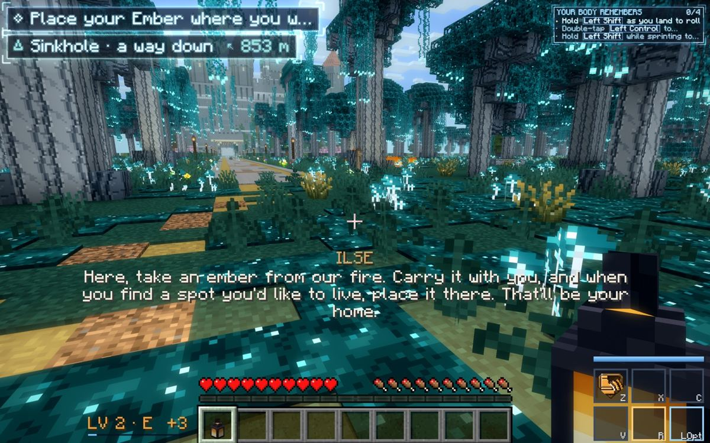
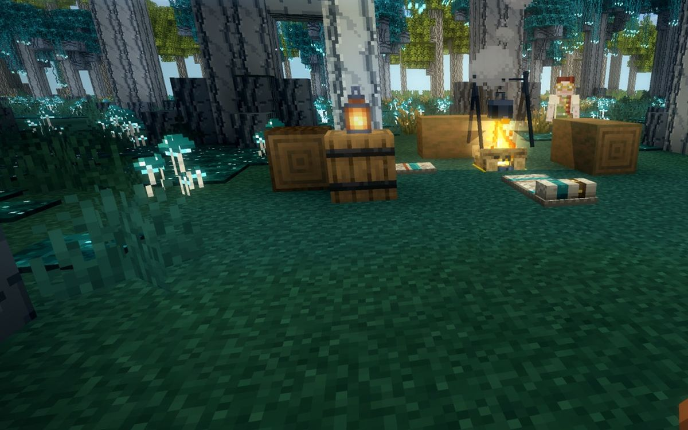

The screen shows the world and only what you need right now. A glance at your wrist shows the rest. Fights get an RPG lock-on in place of the crosshair, so fast and flying creatures can be hit, while timing, spacing, dodges and parries still decide who wins.
Same camp, four moments. Today is a real screenshot from a tour. The other three are mock-ups drawn over a real screenshot with the HUD painted out. Pick a moment.

1 2 3 4 5 6 7 8 9
Today: nine things on screen at once while you walk through a camp. Each number is listed below.
A small arena with two Bell Wisps and a Gale Harpy. They move with the same rules as the game's fliers (the FlyHunt goal and the flier's move control, replayed at 20 ticks a second). You stand still holding a katana. Play 30 seconds as Today, then 30 seconds as Lock-on, and compare the numbers under the arena. The lock-on uses the limits proposed below.
What the mock leaves out: you can't walk, there is no hit-stop or swing animation, and the creatures take three hits. The reach, arc, height band, step-in and lock limits are the real numbers. The two wisps glint white as they rear for a dive (the LIGHT tell); a dodge in that window avoids the blow.
Drawn in the band's own language: thin cyan arcs, corner ticks and the System's diamond. It doesn't look like vanilla, Zelda's fairy or Souls' dot. The ring is also where a creature's tell shows, so the warning sits where you're already looking.
I read the code every flier runs and replayed it (docs/hud-lockon/proof/flysim.py: MobGoals.FlyHunt, FlyerMoveControl and vanilla's air drag from LivingEntity.travelInAir), against a player standing still, 20 runs of 2 minutes each. This is a replay of the code, not a game run.
| What the code does | Where | What it means in a fight |
|---|---|---|
| Fliers circle 3.5 blocks plus their own width from you, 2 to 4 blocks over your feet. They come in only for a dive, then pull back for 1.5 to 2.5 s. | mobs/entity/MobGoals.java FlyHunt | Most weapons reach 2.4 to 3.4 blocks. The flier is out of reach while it circles, so only the dive's half second counts. |
| A melee sweep skips anything whose bottom is more than 1.5 blocks over your eyes, even the creature you aimed at. | arms/ArmsServer.java sweep | A flier hanging just over your head can't be cut at all, whatever you do. |
| Your strike's "aimed" creature is only the one exactly under the crosshair, sent with the press. | arms/client/ArmsPredict.java | Narrow weapons (spear 25°, rapier 20°, daggers 30°) need the crosshair on a 6° target that is moving fast. |
| A soft "focus" exists: after you hit something, your arc turns up to 15° toward it, sideways only. Your body never moves toward it. | ArmsRules.focusTurn | The first hit is the hard one, and nothing ever helps upward. |
Each swing has a lunge number (0 to 1.3 blocks), but it moves only the drawn hands. | ArmsHands, archetypes.json | The swing looks like it steps in, but it doesn't. |
| A blow from out of view shows a red shard only after it lands. The dive's tell (0.4 s) is a glint on the creature. | ArmsHud, ArmsTells | A dive from behind gives no warning you can see. |
| Powers aim with a "fat ray" 0.3 to 1 block wide along your look. | powers/Combat.aimEntity | At 16 blocks a wisp needs your aim within about 4°. |
Two of my guesses turned out wrong, so I've left them out of the fix. Flier speed isn't the main cause: the dive is short, and the real problem is that the flier is out of reach the rest of the time. And the height limit costs a katana only a few points on its own (23% to 26%), because a flier that high is usually out of reach anyway. The lever that matters is reach to the creature you mean to hit.
| Piece | Code | Today | Proposed |
|---|---|---|---|
| Crosshair | vanilla CROSSHAIR; Arms' Resonance arc under it | Always | Gone The lock marks in a fight; a dot only when you can mine, place or use something. |
| Hotbar | vanilla HOTBAR | Always | Wrist On the wrist panel. It pops up for 2 s when you scroll or press 1 to 9, and the held item's name shows. |
| Hearts, hunger, armour, XP bar | vanilla layers | Always | When needed Health and Aether as two thin lines, low and centred, in a fight, when hurt, or when low. Food only when hungry. Armour and XP on the wrist. |
| Aether | ascent_aether | A line over the XP bar | When needed Under health while it's spent or in a fight. |
| Task card, top right | signal.client.TaskHud | Whenever a task is tracked | When needed 8 s after a step changes or ticks, then the wrist. A step that teaches a key stays until you've pressed it. |
| Now line, top left | signal.client.TrackerHud (SPEC §27.11) | Whenever you're going somewhere | Stays, quieter One place, as now. It fades while you walk toward it and comes back when you turn away, stop, or get near. |
| Guidance in the world | Atlas destination beam, Trails (SPEC §33) | On | Keep This already shows the way in the world. The Now line backs it up. |
| Power slots | powers.client.PowerHud; fades to 35% when calm | Always (dimmed when calm) | When needed Hidden when calm, smaller, back at once in a fight, when you press a power key, or while a cooldown runs. |
| Level chip | progression level layer | Always (dimmed when calm) | Wrist On the wrist. It shows for 3 s with the "+XP" rise. |
| Creature plates | living.client.LivingPlates (in the world) | Everyone fighting you, plus whatever is under the crosshair | Keep, fewer The locked or marked creature gets the full plate. Others in the fight get a thin bar. |
| Boss Plate | living.client.BossPlate (SPEC §35.1) | Top of the screen in a boss fight | Keep As built. |
| Gate floor panel | gates.client.RunHudLayer | Always in a gate | One line "Floor 3 · 4:12 left", growing to the full panel when something changes. The collapse clock never hides. |
| System toasts and cards | signal director (SPEC §26) | When something is said | Keep They already wait their turn. |
| Sprint line, Flow, dodge pips | body, arms | Only while they matter | Keep Already quiet. |
Twice a tick-pair the game picks the creature nearest the middle of your view: within 25° of the middle, within 24 blocks, in sight, and hostile or hunting you. It prefers the one already marked, so the mark doesn't flicker between two close creatures. Your strikes steer to it and its plate opens. Turn away and it's gone.
The camera turns to keep the creature in the middle, at most 300° a second and eased, so it never snaps. Your mouse keeps a quarter of its pull, so you can still look a little off. A quick flick or the mouse wheel moves the lock to the next creature that way. It holds through dodges, slides and jumps. It lets go when you press the key again, when the creature has been out of sight for 1.5 s, or when it's 40 blocks away. When the creature dies, it moves to the next one fighting you in front, if there is one.
| With a marked or locked creature | The limit |
|---|---|
Step in. A strike started just out of reach carries you toward the creature. The swing's own lunge becomes real movement, about 1 block (daggers and fists 1.2, maul and greatblade 0.6, spear and glaive 0.4). | Only at the start of a chain or a heavy. Only if the creature is within reach plus the step. You still have to be close. |
| Reach upward. The creature you mean counts anywhere in its body that your weapon reaches, so a rising cut reaches a flier at head height or above. | Your weapon's reach, measured from your eyes as today. Other creatures in the arc keep today's height rule. |
| Strike the one you mean. The server takes the marked creature as the aimed one. | Within 35° of where you're looking, in sight, no walls. The server checks it. The arc still hits what it hits today. |
| Powers bend toward it. Bolts and beams aim a little toward the locked creature. | At most 10° for bolts and 18° for powers that already seek. Beyond that a power goes where you look. |
| Bows. The lock aims you at its body. | No bend. While you draw, the lock loosens to a gentle pull, so drop and lead are still yours. |
| Fliers can be brought down. A flier whose stance breaks, or whose dive you deflect, falls and lies on the ground for 2.5 s, open to an Execution. | Normal and elite fliers. Kit bosses only where their fight script allows (boss-plan's call). |
| Dives from behind are shown. A creature within 12 blocks winding up out of view puts an arc on that edge of the screen, in its tell's colour, for the length of the tell. | Only tells. You still have to turn or dodge in time. |
Never changed: wind-up, active and recovery times, damage, posture, hit-stop, the parry and deflect windows, dodge timing and its charges, and every creature's tells. There are no 360° snaps and no lock through walls. Players can't be locked.
With these limits the replay gives a Bell Wisp in a katana's reach 49% of the fight, up from 23% (Gale Harpy 19% to 40%), and the window to hit it grows from about 450 to 600 ms. With their own steps a spear goes from 39% to 61% and daggers from 20% to 38%. A brought-down flier adds a free 2.5 s on top. Run it yourself: python3 -I docs/hud-lockon/proof/flysim.py for today, add 1.0 for the lock.
ArmsTells). The Boss Plate stays at the top.ArmsHands, and weapon-anims-plan's tuning is untouched.The HUD has three states, plus one key.
Nothing but the world. One line, top left, when you're heading somewhere: it shows for 8 s when the place is new, fades while you walk toward it, and comes back when you turn more than 70° away for 3 s, stop for 2 s, or come within 50 m. The gold beam on the place and your Trails show the way in the world. You are never left without a way to see where to go.
From the moment something hostile hunts you, or you're hurt, until 4 s after it ends. Health and Aether as two thin lines low in the middle, your powers small in the corner, and the lock. Nothing else.
Your left forearm comes up into view and the band projects one panel: level and rank, health, Aether, food, armour, the current task and the next step, the way to your destination with a needle, and your hotbar. Let go and it lowers. You can keep walking and looking while you hold it. In multiplayer the player list joins the panel. A quick tap shows the whole panel for 4 s without the arm.
One setting gives today's HUD and crosshair back, exactly as they are now. A second setting keeps the clear screen but brings back the crosshair. Nothing is lost while you decide.
Why the wrist: the band is already on your wrist in the game (holo.client.Wrist draws the raised forearm and band for the K menu), so the glance is the same gesture you already make. This follows Metro's watch, where you raise your arm to read your status (Metro Exodus). The panel stays flat and readable instead of being printed on the arm, because Metro and Far Cry 2 show the cost of making information hard to read (see below).
Fade more of today's HUD when calm, widen the melee arc and lift the height limit. About 4 to 6 h.
It loses because the screen still looks like today in every fight, and a wider arc helps every swing equally, which makes the fight easier without making it feel aimed. Fliers still sit out of reach.
Three HUD states and the wrist glance; a mark and a lock that step you in, reach up to the one you mean, show dives from behind and bring fliers down; a dot only when needed; Classic one click away. About 15 to 22 h in 4 stages.
It wins because it fixes the measured cause (reach to the creature you mean) while timing stays yours, and every HUD piece gets a clear rule for when it shows.
No screen HUD at all: health only on the band, the map only in the Atlas, no lines. Like Dead Space or Metro on its hardest setting.
It loses because you said the screen must never be cryptic or leave you lost. Players of Metro and Far Cry 2 often got lost (sources below).
What would change my mind: if your playtest of stage 1 shows fliers are still out of reach, the next lever is the fliers themselves (a closer orbit, or a hover before the dive), which is a mobs-module change and boss-plan's area.
| Game | What it does | What we take |
|---|---|---|
| Dead Space | Health is a light strip on the suit's spine, blue to red. Ammo shows only when you aim (Ignacio, GDC 2013; HUDs and GUIs). | Health in segments, shown only when it matters. A behind-the-back spine doesn't work in first person, so the segments sit low and centred. |
| Metro Exodus | A watch and a clipboard carry status and the map. On hard, there is no HUD at all. Reviewers note you get lost often (Wikipedia; Worthplaying review). | Raise your arm to read your status: the Tab glance. Keep the Now line so you're never lost. |
| Far Cry 2 | A handheld map and GPS. The HUD appears only when health or ammo is low. Its 3D map didn't help navigation, and a locator was added (Rice Thresher; UI lecture). | Show health when it changes. When immersion and function clash, function wins. |
| Ghost of Tsushima | The guiding wind replaces the minimap. Accessibility reviewers found it hard to read late in the game (interview; Can I Play That). | Guidance in the world (the beam and Trails), with a readable line that comes back when you drift. |
| Red Dead Redemption 2, Horizon | A HUD you can customise, and Horizon's "dynamic" mode that shows pieces when relevant. A reviewer said it didn't hide enough (GameSpot; Kotaku). | Every piece gets its own reason to show, not one global fade. |
| Zelda: Ocarina of Time | Z-targeting: lock one enemy among many. It came from sword fights and a ninja show (Siliconera; Zelda Wiki). | The lock, and a marker with its own character. |
| Elden Ring, Dark Souls | Lock on with Q or middle mouse; the right stick or Shift and an arrow switches targets (controls list). Players complain about switching by accident (Steam thread). | Middle mouse by default. A flick must be quick and deliberate to switch. |
| Monster Hunter | Two cameras: "focus" follows the monster, "target" turns to it only on a press (Steam thread; GameWith). | Follow by default, Snap as a setting (decision 4). |
| God of War, Spider-Man, Witcher 3 | Melee pulls you a short way to the enemy you face, and fights hinge on reading tells and dodging. I found no primary source for their exact numbers, so ours come from our own replay. | The step-in, kept short and only at the start of a chain. |
dev.awaken.aim: the mark and lock (client), the shared picker AimRules (pure, tested), the reticle, the threat arcs and the dot. Settings in awaken-aim-client.toml.core.api.Aim (SPEC §12): the marked or locked creature on the client, and the server's limit checks. Arms, powers and the rope read it.holo, which already runs the calm fade (CalmHud, HudFade) and the wrist. Each module's layer asks core.api.HudState for its alpha with one line, as docs/proposals/holo-ui.md §8 planned.The press already carries a creature id. The server accepts it only if the creature is alive, in this level, within reach plus the step plus 0.6, within 35° of the press's look, and in sight. Otherwise the swing is a normal sweep. The step-in is your own movement, like the dodge, so the server's movement checks still apply. Players are never accepted as a lock.
The mark is picked every other tick from at most 32 nearby creatures, with at most 6 line-of-sight checks, using reused arrays and no allocation. The reticle is one projected point and a few lines in a GUI layer. Budget: under 0.05 ms a tick and 0.05 ms a frame. No mixins: the camera turn uses CalculatePlayerTurnEvent and the player's own rotation, the wheel uses InputEvent.MouseScrollingEvent, and hiding the vanilla layers uses RenderGuiLayerEvent.Pre (all checked in .ref).
| Case | What happens |
|---|---|
| The locked creature dies | The lock moves to the next creature fighting you within 60° in front and 12 blocks, else it lets go with a short fade. |
| It goes behind a wall, or you teleport or change dimension | The mark keeps it for 1.5 s, then lets go. Teleports and dimension changes let go at once. |
| A screen opens, F1, spectator, a scene or the opening camera | The lock pauses and nothing is drawn. The camera is never turned under a scene (it respects InputLock). |
| Lag: client and server disagree | The server's checks refuse; it's an ordinary swing. No hit is ever granted outside the limits. |
| The camera turning makes you queasy | Reduced motion switches to Snap (turn only when you press). Lock camera can be set to Off. |
| A camera mod (Shoulder Surfing, Camera Overhaul) | The lock turns the player, which those mods follow. To check in your playtest, as the K menu's map scene still is. |
| Lost while exploring | The Now line comes back whenever you turn away, stop, or arrive, and the Tab glance always shows the way. |
| Stage | What you get | Tests | Time |
|---|---|---|---|
| 0. Rules | The picker and limits (AimRules), the server's press check, step-in reach, reach upward for the creature you mean, fliers brought down. No visuals. | aim_soft_pick, aim_caps, aim_flier_locked_hits (a wisp 2.2 blocks over your eyes: locked hits, unlocked misses), aim_no_wall, aim_no_player, aim_flier_brought_down | 2–3 h |
| 1. Lock-on | The mark, the lock key, the camera, switching, the reticle and its tells, the arcs for dives from behind, the dot, powers' bend, bows, swings aim at the lock. The crosshair goes. | aim_power_bend_cap, the replay rerun with the built numbers | 6–8 h |
| 2. Clear screen | Exploring, fighting, Classic; Now line and task card rules; health and Aether lines; hotbar pop-up; plates thinned; gate panel in one line. | hud_states, hud_now_line_returns, hud_classic_unchanged | 4–6 h |
| 3. The glance | Hold Tab: wrist up, the band's panel. Tap for 4 s. | hud_glance_rows | 3–5 h |
| 4. In the air (after you play 1–3) | Air lunge on the rope and in flight; a radial item wheel if you want one. | its own | 3–5 h |
Each stage merges on its own, behind its setting, with CI green. I run only my own tests while building (-Ptests=aim_,hud_), push my branch and dispatch the full GameTests run, then hand back. No tours and no client launches: you see it in game.
AimRules) is offered to them so there's one, not two. I've left a note in the shared notes folder.